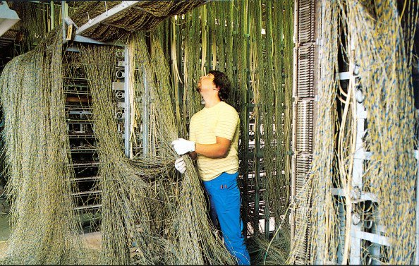
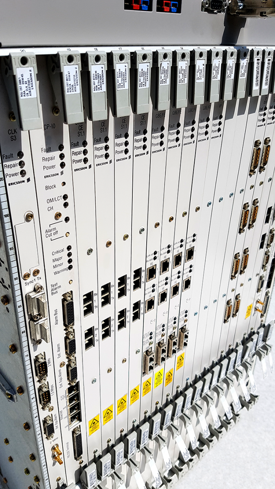
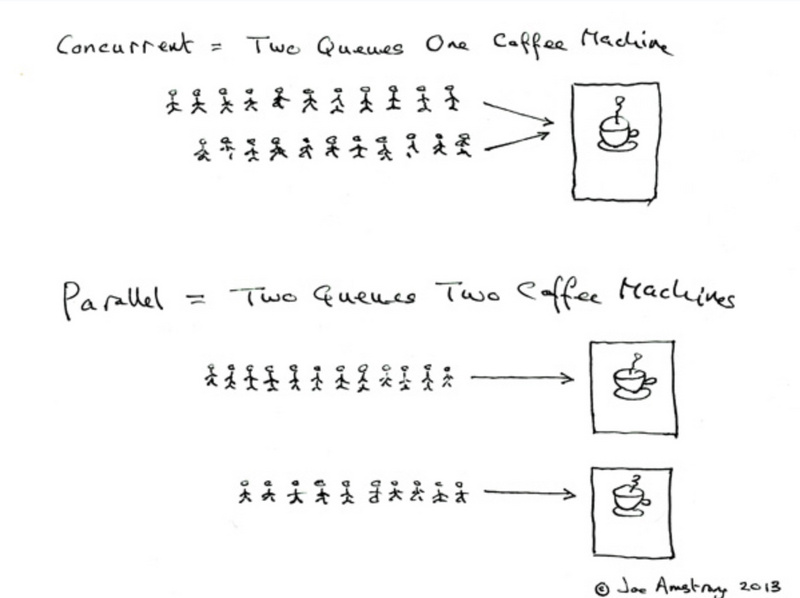
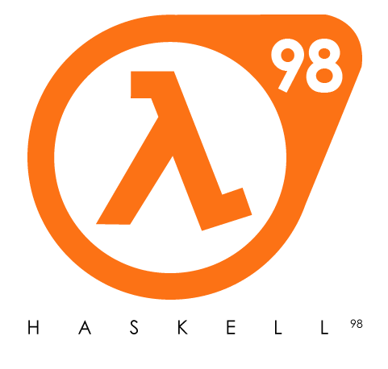

.center[ ### Ericsson ] - Founded by Lars Magnus Ericsson in 1876 - Bell Labs could not compete in Scandinavia - Computerized telephone switches since **1954** (AKE/AXE/AXD series) .center[ <img src="img/Lars-Magnus-Ericsson.jpg" width="20%"> <img src="img/Ericsson-phone.jpg" width="20%"> <img src="img/Ericsson-mobiles.jpg" width="40%"> ] --- .center[ ### Telecom requirements ] - Handling a very large number of concurrent activities - Systems distributed over several computers - Continuous operation over several years - Software maintenance (reconfiguration, etc.) without stopping the system - Strict reliability requirements - Fault tolerance both to hardware failures and software errors .center[  ] --- .center[ ### Erlang ] - PLEX = Fortran + Macro Assembler (since 1970) - Berkeley introduced UNIX 4.2 BSD, which can run on various architecures - Erlang = Ada, EriPascal, Chill, PLEX, Euclid + ML, Smalltalk, Prolog - Erlang meta-interpreter in Prolog by **Joe Armstrong** (1985), own VM created by **Mike Williams** in C (1990) .center[ <img src="img/PLEX-Erlang.png" width="70%"> ] --- .center[ ### Nine Nines ] .left-column[  ] .right-column[ - In 1998 was announced AXD301, 10-160 Gbps ATM switch - Source code contains 1.5M lines of Erlang (main complex control logic) and 0.5M lines of C/C++ (device drivers) - Designed from scratch in less than 3 years - One of the customers was British Telecom (the largest voice ATM station in the world) - During trial period (first 5 years) only 1 minor issue occurred - **99.9999999% reliability (downtime is 31 ms per year)** - Nine nines became a synonym of Erlang and symbol of its reliability, currently even there is [organization](https://ninenines.eu/) with this name ] --- .center[ ### Concurrency vs parallelism ### ? ] --- .center[ ### Concurrency vs parallelism <img src="img/concurrency-vs-parallelism.png" width="80%"> ] --- .center[ ### Concurrency vs parallelism  ] --- .center[ ### Nginx vs Apache ] .left-column.center.middle[ <img src="img/apache.png" width="100%"> ] .right-column.center.middle[ <img src="img/nginx-apache-req.png" width="88%"> <img src="img/nginx-apache-mem.png" width="88%"> ] --- .center[ ### NodeJS vs Haskell ] .left-column.center.middle[ <img src="img/nodejs.png" width="116%">  ] .right-column.middle[ ```javascript require("./examples/js-server.js")() // check webpage http://127.0.0.1:3000 (() => {for (i = 0; i <= 1000000; i++) {console.log(i)}})() // check webpage http://127.0.0.1:3000 while loop is executed ``` ```haskell stack new haskell-server yesod-simple --resolver lts-11.22 cd ./haskell-server/ stack ghci import Control.Concurrent forkIO main -- check webpage http://127.0.0.1:3000 mapM_ print [1..1000000] -- check webpage http://127.0.0.1:3000 while loop is executed ``` ] --- class: center, middle # Thanks ### [back to index](index.html)